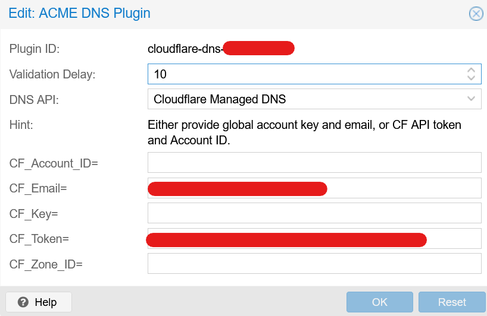
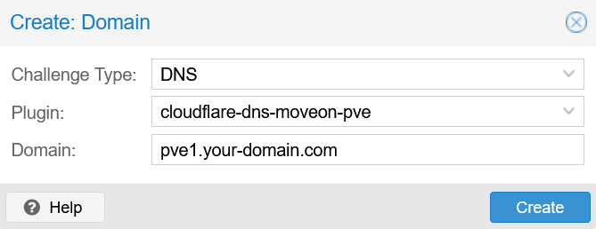

Running Home Assistant on Proxmox - Part 1
How to prepare a Proxmox server for running Home Assistant in a virtual machine. The first part covers the initial setup of Proxmox, including the installation, configuration, and certificate management.
1. Setup Proxmox
- Download ISO and flash on USB Stick with Balena Etcher
- BIOS Settings
- Disable secure boot
- Enable nested virtualization for VMs (KVM virtualization) to work
- Flash OS on SSD and reboot
- Follow on-screen configuration instructions
ssh-copy-id root@<your-ip-address>ssh root@<your-ip-address>- Run
bash -c "$(wget -qLO - https://github.com/tteck/Proxmox/raw/main/misc/post-pve-install.sh)" - Follow terminal prompts. ⚠️ wait for PVE update to finish if selected, this may take several minutes ⚠️
- Reboot
2. Production configuration
2.1 Change IP and gateway
- change gateway (and IP) in
/etc/network/interfaces - Only when IP changed:
/etc/hosts - Change DNS in
/etc/resolv.conf
2.2 Setup certificate management with ACME
- Datacenter (top level) -> ACME
- Accounts -> Add -> configure
- In cloudflare dashboard:
- My profile (upper right) -> API Tokens
- Create Token:
, Permissions: Zone.DNS:Edit, Resources: 1 Zone - Create secure note in PW manager
- Test w/ CURL command
curl -X GET "https://api.cloudflare.com/client/v4/user/tokens/verify" \
-H "Authorization: Bearer <api-token>" \
-H "Content-Type:application/json"{
"result": {
"id": "238a33976d2cf7dfba07e9951ddad1cf",
"status": "active"
},
"success": true,
"errors": [],
"messages": [
{
"code": 10000,
"message": "This API Token is valid and active",
"type": null
}
]
}-
Challenge Plugins -> Add, use the following config:

-
Go back to server -> System -> Certificates -> ACME -> Add:

-
Press "Order Certificates Now"
-
Add DNS record in local DNS resolver (e.g., router, pihole, etc.)
Sources